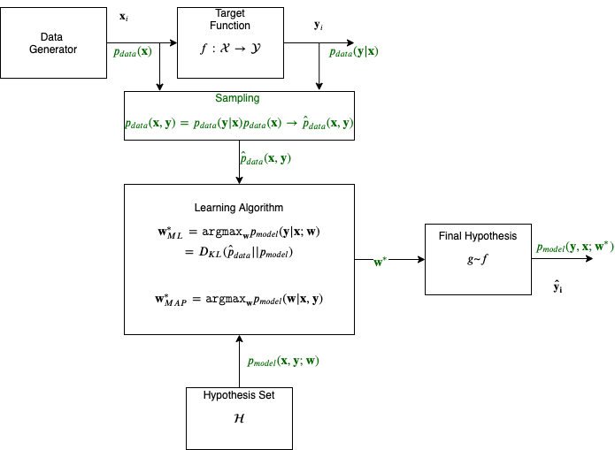

The Learning Problem
Contents
The Learning Problem#
The Supervised (Inductive) Learning Problem Statement#
Let us start with a classic formal definition of the supervised learning problem.

Vapnik’s formulation of the learning problem (enhanced with notation from the Deep Learning book)
The description below is taken from Vadimir Vapnik’s classic book Statistical Learing Theory, albeit with some enhancements on terminology to make it more in line with our needs.
The generator is a source of situations that determines the environment in which the target function (he calls it supervisor) and the learning algorithm act. Here we consider the simplest environment: the data generator generates the vectors \(\mathbf{x} \in \mathcal{X}\) independently and identically distributed (i.i.d.) according to some unknown (but fixed) probability distribution function \(p_{data}(\mathbf{x})\).
The vector \(\mathbf x\) are inputs to the target function (or operator); the target function returns the output values \(y \in \mathcal{Y}\). The target function which transforms the vectors \(\mathbf{x}\) into values \(y\), is unknown but we know that it exists and does not change. The target function effectively returns the output \(y\) on the vector \(\mathbf x\) according to a conditional distribution function \(p(y | \mathbf x)\).
The learning algorithm observes data that is drawn randomly and independently from the joint distribution function \(p_{data}(\mathbf x , y) = p_{data}(\mathbf{x}) p_{data}(y | \mathbf x)\). The sampling distribution denoted as \(\hat{p}_{data}\) produces examples of inputs \(\mathbf{x}\) and the targets (labels) \(y\).
During what is called training, the learning algorithm constructs some operator which will he used for prediction of the supervisor’s answer \(y_i\) on any specific vector \(\mathbf{x}_i\) generated by the generator. The goal of the learning algorithm is to construct an approximation to the target function \(f\). Recall that we do not know this function but we do know that it exists. We will symbolize this approximation \(g\) and we will call it a hypothesis drawn from a hypothesis set. The hypothesis is parametrized with a set of weights, the vector \(\mathbf w\) and can be iteratively constructed so the final hypothesis, that results from the best possible \(\mathbf w\), \(\mathbf w^*\), is the one that is used to produce the predicted label \(\hat{y}\).
The ability to optimally predict, according to a criterion, when observing data that we have never seen before, the test set, is called generalization. Note that in the literature supervised learning is also called inductive learning. Induction is reasoning from observed training cases to general rules (e.g. the final hypothesis function), which are then applied to the test cases.
In summary, to learn we need three components:
Data that may be stored (batch) or streamed (online).
Learning algorithm that optimizes an objective function
Hypothesis set